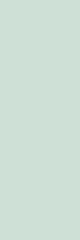
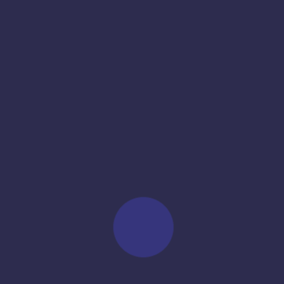
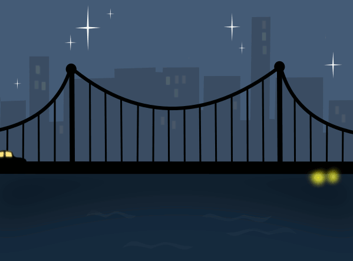

Wykonaj animację obracającej się figury (prostokąt). Wykorzystaj 4 warstwy.
Zapisz animację przy wykorzystaniu:
Wykonaj animację przenikania:

Wykonaj animację zbudowaną z 8 warstw, 110ms dla każdej klatki

Wykonaj animację.

Tutoriale:
Lekcja została przygotowana przez Ewę L. z klasy IID
Animacja przenikania w Gimpie jest tworzona za pomocą dwóch metod:
warstwa tła + przezroczyste klatki, które są animowane
nieprzezroczyste klatki (każda zawiera tło animacji)
Animacja może być zoptymalizowana dla formatu GIF (modyfikowanie obrazu w celu zmniejszenia rozmiaru pliku) lub różnicowo (łączenie warstw).
Eksportowanie animacji do formatu GIF (jako animacja)
Powtarzanie w nieskończoność- zapętla animację
Opóźnienie między klatkami- ustala czas między klatkami,
nie jest brany pod uwagę jeśli odstęp został podany w nazwie warstwy
Traktowanie klatek:
kumulacja warstw- nakładanie jednej klatki na drugą
jedna klatka na warstwę- usuwa pierwszą klatkę przed nałożeniem drugiej
bez znaczenia- standardowe nadpisywanie warstw